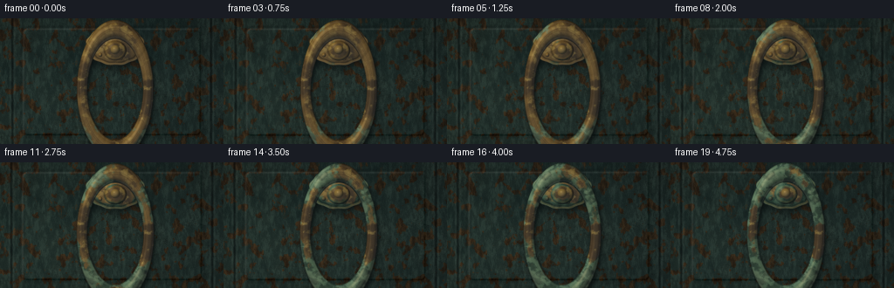
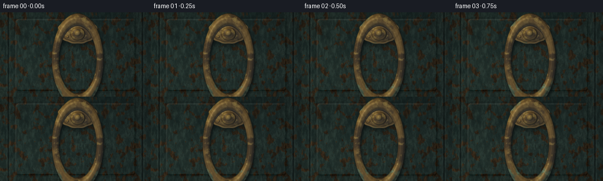
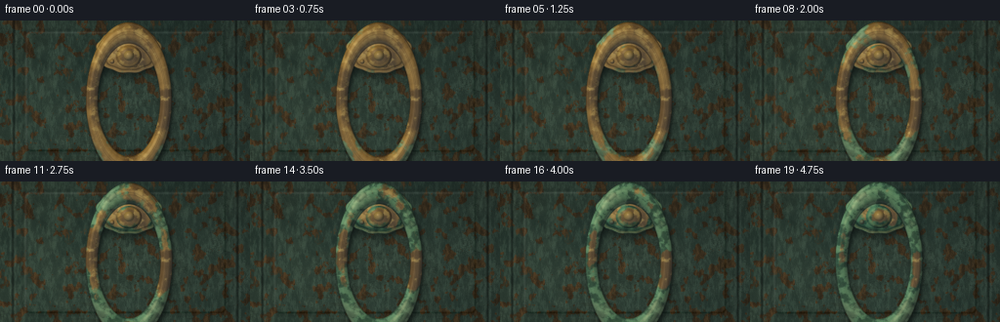
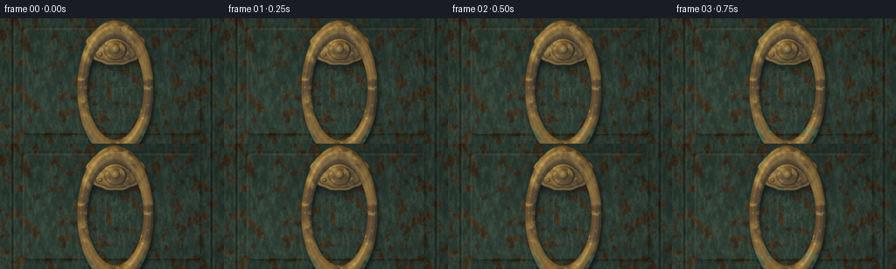
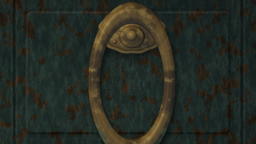
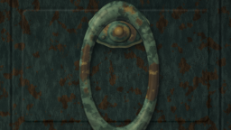
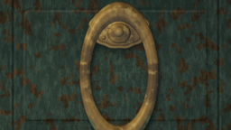
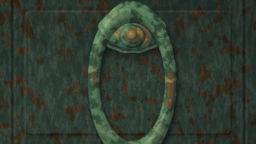
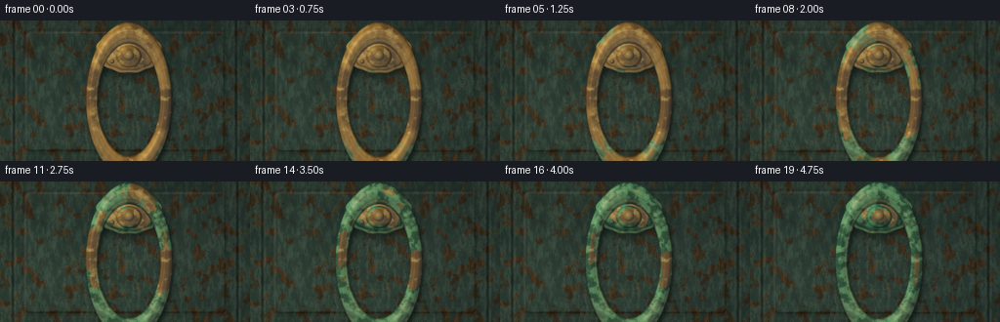

CODING AGENTS AS PIXEL WORLD MODELS
traex/DeepSeek-V4.1-Flash · material_0046
点击播放 · 原生 RGB 像素
逐轮保存的候选
回放视频、检查图与代码变化。
每份候选均可单独播放。实际图片检查记录在下方工具轨迹中。
候选 01播放与检查图
点击播放 · 原生 RGB 像素


展开代码变化
--- 上一保存版本
+++ 本次保存版本
@@ -0,0 +1,460 @@
+from pathlib import Path
+
+import cv2
+import numpy as np
+from PIL import Image, ImageFilter
+from scipy.ndimage import gaussian_filter
+
+import artifact_io
+
+
+CASE_DIR = Path(__file__).resolve().parent
+W, H = 256, 144
+SS = 4
+RW, RH = W * SS, H * SS
+FRAMES = 20
+FPS = 4.0
+
+
+def smoothstep(edge0, edge1, values):
+ x = np.clip((values - edge0) / (edge1 - edge0), 0.0, 1.0)
+ return x * x * (3.0 - 2.0 * x)
+
+
+def mix(a, b, amount):
+ amount = np.asarray(amount, dtype=np.float32)
+ if amount.ndim == 2:
+ amount = amount[:, :, None]
+ return a * (1.0 - amount) + b * amount
+
+
+def fbm(rng, shape, base, octaves=6, persistence=0.56):
+ h, w = shape
+ result = np.zeros(shape, dtype=np.float32)
+ amplitude = 1.0
+ total = 0.0
+ for octave in range(octaves):
+ gw = max(2, int(base[1] * (2**octave)))
+ gh = max(2, int(base[0] * (2**octave)))
+ grid = rng.random((gh, gw), dtype=np.float32)
+ layer = cv2.resize(grid, (w, h), interpolation=cv2.INTER_CUBIC)
+ result += amplitude * layer
+ total += amplitude
+ amplitude *= persistence
+ result /= total
+ lo, hi = np.percentile(result, [1.0, 99.0])
+ return np.clip((result - lo) / (hi - lo), 0.0, 1.0).astype(np.float32)
+
+
+def rounded_rect_sdf(xx, yy, x0, y0, x1, y1, radius):
+ cx, cy = (x0 + x1) * 0.5, (y0 + y1) * 0.5
+ hx, hy = (x1 - x0) * 0.5 - radius, (y1 - y0) * 0.5 - radius
+ qx = np.abs(xx - cx) - hx
+ qy = np.abs(yy - cy) - hy
+ outside = np.sqrt(np.maximum(qx, 0) ** 2 + np.maximum(qy, 0) ** 2)
+ inside = np.minimum(np.maximum(qx, qy), 0)
+ return outside + inside - radius
+
+
+def ellipse_coverage(xx, yy, cx, cy, rx, ry, softness=1.4, scallop=0.0):
+ dx = (xx - cx) / rx
+ dy = (yy - cy) / ry
+ radius = np.sqrt(dx * dx + dy * dy)
+ if scallop:
+ theta = np.arctan2(dy, dx)
+ radius = radius * (1.0 + scallop * np.cos(theta * 12.0))
+ sdf = (radius - 1.0) * min(rx, ry)
+ return np.clip(0.5 - sdf / softness, 0.0, 1.0), radius
+
+
+def sphere_normal(xx, yy, cx, cy, radius):
+ nx = (xx - cx) / radius
+ ny = (yy - cy) / radius
+ rr = nx * nx + ny * ny
+ nz = np.sqrt(np.clip(1.0 - rr, 0.0, 1.0))
+ return nx, ny, nz
+
+
+def normalize(v):
+ return v / np.linalg.norm(v)
+
+
+def make_textures():
+ rng = np.random.default_rng(240511)
+ shape = (RH, RW)
+
+ wood = fbm(rng, shape, (18, 95), octaves=7, persistence=0.58)
+ fine = fbm(rng, shape, (54, 260), octaves=4, persistence=0.52)
+ grain_warp = fbm(rng, shape, (6, 28), octaves=5, persistence=0.6)
+ broad = fbm(rng, shape, (4, 7), octaves=6, persistence=0.58)
+ patina_noise = fbm(rng, shape, (5, 9), octaves=7, persistence=0.62)
+ patina_fine = fbm(rng, shape, (28, 45), octaves=5, persistence=0.55)
+ streak_noise = fbm(rng, shape, (34, 9), octaves=6, persistence=0.58)
+ dapple = fbm(rng, shape, (5, 6), octaves=5, persistence=0.64)
+ chip_noise = fbm(rng, shape, (18, 34), octaves=6, persistence=0.54)
+ crack_noise = fbm(rng, shape, (24, 42), octaves=6, persistence=0.57)
+
+ yy, xx = np.mgrid[0:RH, 0:RW].astype(np.float32)
+ nx = xx / (RW - 1)
+ ny = yy / (RH - 1)
+
+ wood_lines = 0.5 + 0.5 * np.sin(
+ (nx * 45.0 + grain_warp * 8.0 + ny * 0.7) * np.pi * 2.0
+ )
+ wood_texture = 0.58 * wood + 0.27 * fine + 0.15 * wood_lines
+
+ return {
+ "wood": wood_texture.astype(np.float32),
+ "broad": broad,
+ "patina": patina_noise,
+ "patina_fine": patina_fine,
+ "streak": streak_noise,
+ "dapple": dapple,
+ "chips": chip_noise,
+ "cracks": crack_noise,
+ "xx": xx,
+ "yy": yy,
+ "nx": nx,
+ "ny": ny,
+ }
+
+
+def make_background(tex, t):
+ xx, yy = tex["xx"], tex["yy"]
+ nx, ny = tex["nx"], tex["ny"]
+
+ # Weathered blue-green paint over old timber.
+ paint_dark = np.array([0.095, 0.150, 0.145], dtype=np.float32)
+ paint_light = np.array([0.185, 0.245, 0.220], dtype=np.float32)
+ paint = mix(paint_dark, paint_light, tex["broad"] * 0.68 + tex["wood"] * 0.32)
+
+ timber_dark = np.array([0.105, 0.068, 0.037], dtype=np.float32)
+ timber_light = np.array([0.285, 0.190, 0.105], dtype=np.float32)
+ timber = mix(timber_dark, timber_light, tex["wood"] * 0.82 + tex["broad"] * 0.18)
+
+ # Paint wear follows the grain and is strongest near panel edges.
+ panel_sdf = rounded_rect_sdf(xx, yy, 0.105 * RW, 0.085 * RH, 0.895 * RW, 0.925 * RH, 19.0)
+ edge_wear = smoothstep(16.0, 1.0, np.abs(panel_sdf))
+ chip_score = tex["chips"] + edge_wear * 0.19 + (tex["wood"] - 0.5) * 0.12
+ chips = smoothstep(0.675, 0.735, chip_score)
+ chips *= smoothstep(0.30, 0.55, tex["broad"] + tex["wood"] * 0.45)
+ door = mix(paint, timber, chips * 0.9)
+
+ # Fine grain and paint crackle.
+ grain_shadow = smoothstep(0.38, 0.76, tex["wood"])
+ door *= (0.82 + 0.24 * grain_shadow[:, :, None])
+ crack = 1.0 - smoothstep(0.020, 0.050, np.abs(tex["cracks"] - 0.52))
+ crack *= smoothstep(0.50, 0.73, tex["broad"])
+ door *= (1.0 - 0.25 * crack[:, :, None] * (1.0 - chips[:, :, None]))
+
+ # Wide vertical boards and their dark joints.
+ for seam_x in (0.055, 0.945):
+ distance = np.abs(nx - seam_x)
+ groove = np.exp(-(distance * RW / 4.1) ** 2)
+ light_edge = np.exp(-((distance - 0.010) * RW / 3.1) ** 2)
+ door *= (1.0 - 0.48 * groove[:, :, None])
+ door += 0.035 * light_edge[:, :, None]
+
+ # Shallow raised panel with a worn bevel.
+ gy, gx = np.gradient(gaussian_filter(panel_sdf, 2.0))
+ grad_len = np.sqrt(gx * gx + gy * gy) + 1e-6
+ gx /= grad_len
+ gy /= grad_len
+ border = np.exp(-(panel_sdf / 4.0) ** 2)
+ bevel_light = np.clip(-0.62 * gx - 0.78 * gy, -1.0, 1.0)
+ door += border[:, :, None] * bevel_light[:, :, None] * 0.105
+ door *= (1.0 - 0.14 * np.exp(-((panel_sdf - 11.0) / 6.0) ** 2)[:, :, None])
+
+ # Damp runnels and old water marks under the hardware.
+ vertical_falloff = smoothstep(0.14, 0.92, ny)
+ streak = smoothstep(0.54, 0.76, tex["streak"]) * vertical_falloff
+ streak *= np.exp(-((nx - 0.49) / 0.26) ** 4)
+ door *= (1.0 - 0.18 * streak[:, :, None])
+ door += np.array([0.014, 0.010, 0.005], dtype=np.float32) * streak[:, :, None]
+
+ # Soft daylight from upper left, with a weak moving cloud shadow.
+ key = np.clip(1.06 - 0.28 * nx + 0.12 * ny, 0.68, 1.15)
+ key *= 0.98 + 0.035 * np.sin(t * np.pi)
+ door *= key[:, :, None]
+ warm = np.array([1.07, 1.02, 0.90], dtype=np.float32)
+ cool_shadow = np.array([0.91, 1.00, 1.06], dtype=np.float32)
+ light_tint = mix(cool_shadow, warm, np.clip(0.66 - 0.26 * nx + 0.08 * np.sin(t * np.pi), 0.0, 1.0))
+ door *= light_tint
+
+ # Diffuse leaf shadows keep the setting outdoors without adding clutter.
+ dapple = smoothstep(0.56, 0.77, tex["dapple"] + 0.08 * tex["broad"])
+ dapple *= np.exp(-(((nx - 0.18) / 0.34) ** 2 + ((ny - 0.15) / 0.33) ** 2))
+ door *= (1.0 - 0.10 * dapple[:, :, None])
+
+ return np.clip(door, 0.0, 1.0).astype(np.float32)
+
+
+def metal_colors(tex, patina, tarnish, yy, t):
+ fine = tex["patina_fine"]
+ dark = np.array([0.205, 0.132, 0.048], dtype=np.float32)
+ mid = np.array([0.535, 0.365, 0.115], dtype=np.float32)
+ bright = np.array([0.820, 0.650, 0.245], dtype=np.float32)
+
+ base = mix(dark, mid, smoothstep(0.18, 0.72, tex["patina"]))
+ base = mix(base, bright, smoothstep(0.58, 0.90, fine) * 0.44)
+ base = mix(base, dark, tarnish * 0.34)
+
+ green_dark = np.array([0.125, 0.245, 0.200], dtype=np.float32)
+ green_mid = np.array([0.265, 0.430, 0.335], dtype=np.float32)
+ green_pale = np.array([0.490, 0.625, 0.475], dtype=np.float32)
+ oxide = mix(green_dark, green_mid, smoothstep(0.22, 0.72, tex["patina_fine"]))
+ oxide = mix(oxide, green_pale, smoothstep(0.63, 0.86, tex["patina"]) * 0.58)
+
+ # Slight downward mineral staining, strongest late in the timelapse.
+ lower = smoothstep(0.22 * RH, 0.92 * RH, yy)
+ oxide = mix(oxide, np.array([0.165, 0.310, 0.255], dtype=np.float32), lower * 0.12 * t)
+ return mix(base, oxide, patina * 0.92)
+
+
+def shade_surface(base, nx, ny, nz, patina, t, key_dir, shininess=42.0):
+ norm = np.sqrt(nx * nx + ny * ny + nz * nz) + 1e-6
+ nx, ny, nz = nx / norm, ny / norm, nz / norm
+
+ light = normalize(np.array(key_dir, dtype=np.float32))
+ diffuse = np.clip(nx * light[0] + ny * light[1] + nz * light[2], 0.0, 1.0)
+ view = np.array([0.0, 0.0, 1.0], dtype=np.float32)
+ half = normalize(light + view)
+ ndoth = np.clip(nx * half[0] + ny * half[1] + nz * half[2], 0.0, 1.0)
+ fresnel = 0.20 + 0.80 * (1.0 - np.clip(nz, 0.0, 1.0)) ** 3
+ spec = (ndoth**shininess) * fresnel
+
+ sky = np.clip(0.52 + 0.33 * ny + 0.15 * nz, 0.0, 1.0)
+ reflected = np.array([0.82, 0.91, 1.00], dtype=np.float32) * sky[:, :, None]
+ reflected *= 0.11
+ color = base * (0.24 + 0.92 * diffuse[:, :, None])
+ color += reflected * (1.0 - 0.55 * patina[:, :, None])
+ color += spec[:, :, None] * np.array([1.00, 0.84, 0.54], dtype=np.float32)
+ color += (1.0 - patina[:, :, None]) * (nz**5)[:, :, None] * 0.055
+ return color
+
+
+def add_shadow(background, mask, dx, dy, blur, strength):
+ shifted = np.roll(mask, shift=(dy, dx), axis=(0, 1))
+ if dy > 0:
+ shifted[:dy] = 0.0
+ elif dy < 0:
+ shifted[dy:] = 0.0
+ if dx > 0:
+ shifted[:, :dx] = 0.0
+ elif dx < 0:
+ shifted[:, dx:] = 0.0
+ shadow = gaussian_filter(shifted, blur)
+ shadow = np.clip(shadow * strength, 0.0, 1.0)
+ return background * (1.0 - shadow[:, :, None])
+
+
+def composite(image, color, alpha):
+ return image * (1.0 - alpha[:, :, None]) + color * alpha[:, :, None]
+
+
+def render_frame(tex, frame_index):
+ t = frame_index / (FRAMES - 1)
+ xx, yy = tex["xx"], tex["yy"]
+ image = make_background(tex, t)
+
+ cx, cy = 0.515 * RW, 0.565 * RH
+ ring_r = 0.148 * RW
+ ring_ry = ring_r * (RW / RH) * 1.02
+ tube = 0.0235 * RW
+
+ plate_cx, plate_cy = 0.515 * RW, 0.215 * RH
+ plate_rx, plate_ry = 0.132 * RW, 0.158 * RH
+
+ plate_alpha, plate_radius = ellipse_coverage(
+ xx, yy, plate_cx, plate_cy, plate_rx, plate_ry, softness=1.6, scallop=0.018
+ )
+
+ # Ring signed-distance field in a y-scaled circular space.
+ lx = xx - cx
+ ly = (yy - cy) * (ring_r / ring_ry)
+ rho = np.sqrt(lx * lx + ly * ly) + 1e-6
+ q = rho - ring_r
+ inside = np.abs(q) <= tube
+ ring_alpha = np.clip((tube - np.abs(q)) / 1.8 + 0.5, 0.0, 1.0)
+ ring_alpha *= (rho > ring_r - tube * 1.1).astype(np.float32)
+ z = np.sqrt(np.clip(tube * tube - q * q, 0.0, None))
+ ux, uy = lx / rho, ly / rho
+ rnx = q * ux / max(tube, 1e-6)
+ rny = q * uy / max(tube, 1e-6)
+ rnz = z / max(tube, 1e-6)
+
+ shadow_mask = np.maximum(plate_alpha, ring_alpha)
+ image = add_shadow(image, shadow_mask, 10, 20, 15.0, 0.48)
+ image = add_shadow(image, ring_alpha, 3, 7, 5.0, 0.34)
+
+ key_dir = (-0.53 + 0.045 * t, -0.64, 0.76)
+
+ # Cast plate: scalloped rim, recessed field, and a shallow domed face.
+ plate_cavity = smoothstep(0.55, 1.0, plate_radius)
+ plate_patina_score = (
+ 0.64 * tex["patina"]
+ + 0.24 * plate_cavity
+ + 0.10 * smoothstep(0.20, 0.92, yy / RH)
+ + 0.46 * t
+ - 0.73
+ )
+ plate_patina = smoothstep(-0.035, 0.12, plate_patina_score)
+ plate_tarnish = smoothstep(0.34, 0.84, tex["patina"] + plate_cavity * 0.22)
+
+ pdx = (xx - plate_cx) / plate_rx
+ pdy = (yy - plate_cy) / plate_ry
+ dome = np.sqrt(np.clip(1.0 - plate_radius * plate_radius, 0.0, 1.0))
+ pnx = pdx * 0.58
+ pny = pdy * 0.58
+ pnz = 0.48 + dome * 0.62
+ plate_color = metal_colors(tex, plate_patina, plate_tarnish, yy, t)
+ plate_color = shade_surface(plate_color, pnx, pny, pnz, plate_patina, t, key_dir, shininess=35.0)
+
+ # Raised rim and recessed groove.
+ rim = np.exp(-((plate_radius - 0.925) / 0.035) ** 2)
+ groove = np.exp(-((plate_radius - 0.845) / 0.030) ** 2)
+ plate_color += rim[:, :, None] * np.array([0.17, 0.12, 0.045], dtype=np.float32)
+ plate_color *= (1.0 - 0.30 * groove[:, :, None])
+ plate_color += np.exp(-((plate_radius - 0.965) / 0.018) ** 2)[:, :, None] * np.array(
+ [0.16, 0.14, 0.09], dtype=np.float32
+ )
+
+ # Six small domed fasteners around the escutcheon.
+ for angle in np.linspace(0.0, 2.0 * np.pi, 6, endpoint=False) + 0.26:
+ bx = plate_cx + np.cos(angle) * plate_rx * 0.72
+ by = plate_cy + np.sin(angle) * plate_ry * 0.67
+ bolt_r = 0.0095 * RW
+ bolt_alpha, bolt_radius = ellipse_coverage(xx, yy, bx, by, bolt_r, bolt_r, softness=1.4)
+ bnx, bny, bnz = sphere_normal(xx, yy, bx, by, bolt_r)
+ bolt_base = mix(
+ np.array([0.44, 0.30, 0.10], dtype=np.float32),
+ np.array([0.17, 0.29, 0.23], dtype=np.float32),
+ plate_patina * 0.7,
+ )
+ bolt_color = shade_surface(bolt_base, bnx, bny, bnz, plate_patina * 0.6, t, key_dir, shininess=55.0)
+ plate_color = composite(plate_color, bolt_color, bolt_alpha)
+
+ image = composite(image, plate_color, plate_alpha)
+
+ # The ring's deep recesses gather oxidation first.
+ ring_crevice = smoothstep(0.20, 0.96, np.abs(q) / tube)
+ inner_lower = smoothstep(0.45, 0.98, (yy - (cy - ring_ry)) / (2.0 * ring_ry))
+ patina_score = (
+ 0.69 * tex["patina"]
+ + 0.18 * ring_crevice
+ + 0.12 * inner_lower
+ + 0.49 * t
+ - 0.745
+ )
+ patina = smoothstep(-0.035, 0.12, patina_score)
+ patina *= 0.90
+ tarnish = smoothstep(0.29, 0.78, tex["patina"] + ring_crevice * 0.18)
+
+ ring_color = metal_colors(tex, patina, tarnish, yy, t)
+ ring_color = shade_surface(ring_color, rnx, rny, rnz, patina, t, key_dir, shininess=48.0)
+
+ # Fine cast ribs and a narrow center wear line.
+ angle = np.arctan2(ly, lx)
+ ribs = 0.5 + 0.5 * np.cos(angle * 34.0 + 0.3)
+ ring_color *= (0.965 + 0.055 * ribs)[:, :, None]
+ centerline = np.exp(-((np.abs(q) - tube * 0.10) / (tube * 0.075)) ** 2)
+ ring_color *= (1.0 - 0.16 * centerline * (1.0 - patina * 0.55))[:, :, None]
+ ring_color += np.exp(-((np.abs(q) - tube * 0.80) / (tube * 0.09)) ** 2)[:, :, None] * 0.055
+
+ # Powdery oxide speckle.
+ crust = smoothstep(0.67, 0.83, tex["patina_fine"] + patina * 0.24) * patina
+ ring_color += crust[:, :, None] * np.array([0.055, 0.070, 0.045], dtype=np.float32)
+
+ image = composite(image, ring_color, ring_alpha)
+
+ # Hinge boss sits over the top of the ring.
+ boss_cx, boss_cy = cx, plate_cy + 0.040 * RH
+ boss_rx, boss_ry = 0.051 * RW, 0.080 * RH
+ boss_alpha, boss_radius = ellipse_coverage(xx, yy, boss_cx, boss_cy, boss_rx, boss_ry, softness=1.5)
+ bdx = (xx - boss_cx) / boss_rx
+ bdy = (yy - boss_cy) / boss_ry
+ boss_dome = np.sqrt(np.clip(1.0 - boss_radius * boss_radius, 0.0, 1.0))
+ bnx, bny, bnz = bdx * 0.88, bdy * 0.88, 0.40 + boss_dome * 0.85
+ boss_patina = smoothstep(-0.08, 0.12, 0.72 * tex["patina"] + 0.20 * boss_radius + 0.42 * t - 0.74)
+ boss_color = metal_colors(tex, boss_patina, tarnish, yy, t)
+ boss_color = shade_surface(boss_color, bnx, bny, bnz, boss_patina, t, key_dir, shininess=58.0)
+ boss_color *= (0.86 + 0.18 * boss_dome)[:, :, None]
+ boss_color += np.exp(-((boss_radius - 0.78) / 0.08) ** 2)[:, :, None] * np.array(
+ [0.10, 0.075, 0.025], dtype=np.float32
+ )
+
+ # Central pivot cap.
+ cap_rx, cap_ry = 0.021 * RW, 0.036 * RH
+ cap_alpha, cap_radius = ellipse_coverage(xx, yy, boss_cx, boss_cy - 0.006 * RH, cap_rx, cap_ry, softness=1.2)
+ cnx, cny, cnz = sphere_normal(xx, yy, boss_cx, boss_cy - 0.006 * RH, cap_rx)
+ cap_color = shade_surface(
+ np.array([0.50, 0.37, 0.14], dtype=np.float32),
+ cnx,
+ cny,
+ cnz,
+ np.clip(boss_patina * 0.6, 0.0, 1.0),
+ t,
+ key_dir,
+ shininess=64.0,
+ )
+ boss_color = composite(boss_color, cap_color, cap_alpha)
+ image = composite(image, boss_color, boss_alpha)
+
+ # Contact occlusion around the lower edge of the plate and ring.
+ contact = np.maximum(
+ np.exp(-((plate_radius - 1.0) / 0.045) ** 2),
+ np.exp(-((np.abs(q) - tube) / 2.5) ** 2) * ring_alpha,
+ )
+ image *= (1.0 - 0.10 * contact[:, :, None])
+
+ # Soft outdoor bounce light and restrained bloom around warm metal highlights.
+ luminance = image[..., 0] * 0.30 + image[..., 1] * 0.57 + image[..., 2] * 0.13
+ highlights = np.clip((luminance - 0.62) / 0.38, 0.0, 1.0)
+ bloom = gaussian_filter(highlights, 5.0)
+ image += bloom[:, :, None] * np.array([0.075, 0.060, 0.034], dtype=np.float32)
+
+ # Filmic grade: cool weathered shadows, warm sunlit metal.
+ shadow_lift = np.array([0.010, 0.018, 0.021], dtype=np.float32)
+ image += shadow_lift * (1.0 - np.clip(luminance, 0.0, 1.0))[:, :, None]
+ image = np.maximum(image, 0.0)
+ image = image / (1.0 + 0.35 * image)
+
+ # Lens falloff and very light photographic grain.
+ radial = ((tex["nx"] - 0.52) / 0.62) ** 2 + ((tex["ny"] - 0.52) / 0.70) ** 2
+ vignette = np.clip(1.0 - 0.16 * radial**1.35, 0.75, 1.0)
+ image *= vignette[:, :, None]
+ rng = np.random.default_rng(991 + frame_index)
+ grain = rng.normal(0.0, 0.009, (RH, RW, 1)).astype(np.float32)
+ image = np.clip(image + grain, 0.0, 1.0)
+
+ # Gentle macro push-in, largest at the end to emphasize the surface change.
+ zoom = 1.0 + 0.018 * t
+ crop_w = int(RW / zoom)
+ crop_h = int(RH / zoom)
+ x0 = (RW - crop_w) // 2
+ y0 = int((RH - crop_h) * 0.46)
+ crop = image[y0 : y0 + crop_h, x0 : x0 + crop_w]
+ crop_u8 = np.clip(crop * 255.0 + 0.5, 0.0, 255.0).astype(np.uint8)
+ resized = cv2.resize(crop_u8, (W, H), interpolation=cv2.INTER_AREA)
+ return resized
+
+
+def main():
+ tex = make_textures()
+ frames = np.stack([render_frame(tex, i) for i in range(FRAMES)], axis=0)
+ artifact_io.save(frames, CASE_DIR)
+
+ writer = cv2.VideoWriter(
+ str(CASE_DIR / "video.mp4"),
+ cv2.VideoWriter_fourcc(*"mp4v"),
+ FPS,
+ (W, H),
+ )
+ for frame in frames:
+ writer.write(cv2.cvtColor(frame, cv2.COLOR_RGB2BGR))
+ writer.release()
+ print(f"saved {frames.shape} frames to {CASE_DIR}")
+
+
+if __name__ == "__main__":
+ main()
候选 02播放与检查图
点击播放 · 原生 RGB 像素


展开代码变化
--- 上一保存版本
+++ 本次保存版本
@@ -124,19 +124,19 @@
nx, ny = tex["nx"], tex["ny"]
# Weathered blue-green paint over old timber.
- paint_dark = np.array([0.095, 0.150, 0.145], dtype=np.float32)
- paint_light = np.array([0.185, 0.245, 0.220], dtype=np.float32)
+ paint_dark = np.array([0.125, 0.190, 0.170], dtype=np.float32)
+ paint_light = np.array([0.245, 0.315, 0.265], dtype=np.float32)
paint = mix(paint_dark, paint_light, tex["broad"] * 0.68 + tex["wood"] * 0.32)
- timber_dark = np.array([0.105, 0.068, 0.037], dtype=np.float32)
- timber_light = np.array([0.285, 0.190, 0.105], dtype=np.float32)
+ timber_dark = np.array([0.145, 0.090, 0.045], dtype=np.float32)
+ timber_light = np.array([0.345, 0.225, 0.120], dtype=np.float32)
timber = mix(timber_dark, timber_light, tex["wood"] * 0.82 + tex["broad"] * 0.18)
# Paint wear follows the grain and is strongest near panel edges.
panel_sdf = rounded_rect_sdf(xx, yy, 0.105 * RW, 0.085 * RH, 0.895 * RW, 0.925 * RH, 19.0)
edge_wear = smoothstep(16.0, 1.0, np.abs(panel_sdf))
chip_score = tex["chips"] + edge_wear * 0.19 + (tex["wood"] - 0.5) * 0.12
- chips = smoothstep(0.675, 0.735, chip_score)
+ chips = smoothstep(0.665, 0.730, chip_score)
chips *= smoothstep(0.30, 0.55, tex["broad"] + tex["wood"] * 0.45)
door = mix(paint, timber, chips * 0.9)
@@ -176,6 +176,7 @@
key = np.clip(1.06 - 0.28 * nx + 0.12 * ny, 0.68, 1.15)
key *= 0.98 + 0.035 * np.sin(t * np.pi)
door *= key[:, :, None]
+ door += np.array([0.025, 0.030, 0.024], dtype=np.float32)
warm = np.array([1.07, 1.02, 0.90], dtype=np.float32)
cool_shadow = np.array([0.91, 1.00, 1.06], dtype=np.float32)
light_tint = mix(cool_shadow, warm, np.clip(0.66 - 0.26 * nx + 0.08 * np.sin(t * np.pi), 0.0, 1.0))
@@ -191,24 +192,24 @@
def metal_colors(tex, patina, tarnish, yy, t):
fine = tex["patina_fine"]
- dark = np.array([0.205, 0.132, 0.048], dtype=np.float32)
- mid = np.array([0.535, 0.365, 0.115], dtype=np.float32)
- bright = np.array([0.820, 0.650, 0.245], dtype=np.float32)
+ dark = np.array([0.285, 0.180, 0.055], dtype=np.float32)
+ mid = np.array([0.635, 0.430, 0.125], dtype=np.float32)
+ bright = np.array([0.900, 0.710, 0.285], dtype=np.float32)
base = mix(dark, mid, smoothstep(0.18, 0.72, tex["patina"]))
base = mix(base, bright, smoothstep(0.58, 0.90, fine) * 0.44)
base = mix(base, dark, tarnish * 0.34)
- green_dark = np.array([0.125, 0.245, 0.200], dtype=np.float32)
- green_mid = np.array([0.265, 0.430, 0.335], dtype=np.float32)
- green_pale = np.array([0.490, 0.625, 0.475], dtype=np.float32)
+ green_dark = np.array([0.105, 0.255, 0.185], dtype=np.float32)
+ green_mid = np.array([0.245, 0.475, 0.320], dtype=np.float32)
+ green_pale = np.array([0.485, 0.660, 0.455], dtype=np.float32)
oxide = mix(green_dark, green_mid, smoothstep(0.22, 0.72, tex["patina_fine"]))
oxide = mix(oxide, green_pale, smoothstep(0.63, 0.86, tex["patina"]) * 0.58)
# Slight downward mineral staining, strongest late in the timelapse.
lower = smoothstep(0.22 * RH, 0.92 * RH, yy)
oxide = mix(oxide, np.array([0.165, 0.310, 0.255], dtype=np.float32), lower * 0.12 * t)
- return mix(base, oxide, patina * 0.92)
+ return mix(base, oxide, patina * 0.96)
def shade_surface(base, nx, ny, nz, patina, t, key_dir, shininess=42.0):
@@ -225,11 +226,11 @@
sky = np.clip(0.52 + 0.33 * ny + 0.15 * nz, 0.0, 1.0)
reflected = np.array([0.82, 0.91, 1.00], dtype=np.float32) * sky[:, :, None]
- reflected *= 0.11
- color = base * (0.24 + 0.92 * diffuse[:, :, None])
+ reflected *= 0.15
+ color = base * (0.38 + 0.94 * diffuse[:, :, None])
color += reflected * (1.0 - 0.55 * patina[:, :, None])
color += spec[:, :, None] * np.array([1.00, 0.84, 0.54], dtype=np.float32)
- color += (1.0 - patina[:, :, None]) * (nz**5)[:, :, None] * 0.055
+ color += (1.0 - patina[:, :, None]) * (nz**5)[:, :, None] * 0.075
return color
@@ -343,8 +344,8 @@
0.69 * tex["patina"]
+ 0.18 * ring_crevice
+ 0.12 * inner_lower
- + 0.49 * t
- - 0.745
+ + 0.70 * t
+ - 0.80
)
patina = smoothstep(-0.035, 0.12, patina_score)
patina *= 0.90
候选 03播放与检查图
点击播放 · 原生 RGB 像素

展开代码变化
--- 上一保存版本
+++ 本次保存版本
@@ -192,24 +192,24 @@
def metal_colors(tex, patina, tarnish, yy, t):
fine = tex["patina_fine"]
- dark = np.array([0.285, 0.180, 0.055], dtype=np.float32)
- mid = np.array([0.635, 0.430, 0.125], dtype=np.float32)
- bright = np.array([0.900, 0.710, 0.285], dtype=np.float32)
+ dark = np.array([0.325, 0.195, 0.055], dtype=np.float32)
+ mid = np.array([0.730, 0.480, 0.135], dtype=np.float32)
+ bright = np.array([1.000, 0.785, 0.305], dtype=np.float32)
base = mix(dark, mid, smoothstep(0.18, 0.72, tex["patina"]))
base = mix(base, bright, smoothstep(0.58, 0.90, fine) * 0.44)
base = mix(base, dark, tarnish * 0.34)
- green_dark = np.array([0.105, 0.255, 0.185], dtype=np.float32)
- green_mid = np.array([0.245, 0.475, 0.320], dtype=np.float32)
- green_pale = np.array([0.485, 0.660, 0.455], dtype=np.float32)
+ green_dark = np.array([0.090, 0.265, 0.170], dtype=np.float32)
+ green_mid = np.array([0.220, 0.510, 0.310], dtype=np.float32)
+ green_pale = np.array([0.490, 0.700, 0.450], dtype=np.float32)
oxide = mix(green_dark, green_mid, smoothstep(0.22, 0.72, tex["patina_fine"]))
oxide = mix(oxide, green_pale, smoothstep(0.63, 0.86, tex["patina"]) * 0.58)
# Slight downward mineral staining, strongest late in the timelapse.
lower = smoothstep(0.22 * RH, 0.92 * RH, yy)
oxide = mix(oxide, np.array([0.165, 0.310, 0.255], dtype=np.float32), lower * 0.12 * t)
- return mix(base, oxide, patina * 0.96)
+ return mix(base, oxide, patina * 0.98)
def shade_surface(base, nx, ny, nz, patina, t, key_dir, shininess=42.0):
@@ -341,11 +341,11 @@
ring_crevice = smoothstep(0.20, 0.96, np.abs(q) / tube)
inner_lower = smoothstep(0.45, 0.98, (yy - (cy - ring_ry)) / (2.0 * ring_ry))
patina_score = (
- 0.69 * tex["patina"]
+ 0.74 * tex["patina"]
+ 0.18 * ring_crevice
+ 0.12 * inner_lower
- + 0.70 * t
- - 0.80
+ + 0.90 * t
+ - 0.91
)
patina = smoothstep(-0.035, 0.12, patina_score)
patina *= 0.90
@@ -364,7 +364,12 @@
# Powdery oxide speckle.
crust = smoothstep(0.67, 0.83, tex["patina_fine"] + patina * 0.24) * patina
- ring_color += crust[:, :, None] * np.array([0.055, 0.070, 0.045], dtype=np.float32)
+ ring_color += crust[:, :, None] * np.array([0.075, 0.090, 0.055], dtype=np.float32)
+
+ # A narrow sunlit edge keeps the silhouette legible against the timber.
+ edge_glint = np.exp(-((q + tube * 0.68) / (tube * 0.105)) ** 2)
+ edge_glint *= (0.35 + 0.65 * np.clip(0.55 - 0.70 * ux - 0.38 * uy, 0.0, 1.0))
+ ring_color += edge_glint[:, :, None] * np.array([0.19, 0.145, 0.065], dtype=np.float32)
image = composite(image, ring_color, ring_alpha)
候选 04播放与检查图

可观测工具轨迹
实际执行的命令与返回图片。
命令 1exit 0
/bin/bash -c "pwd && rg --files -g '"'!*.mp4'"' -g '"'!*.mov'"' -g '"'!*.png'"' -g '"'!*.jpg'"' | sort"
命令 2exit 0
/bin/bash -c "printf '%s\\n' '--- prompt.txt ---'; sed -n '1,240p' prompt.txt; printf '%s\\n' '--- GENERATION_RULES.md ---'; sed -n '1,300p' GENERATION_RULES.md; printf '%s\\n' '--- task_spec.json ---'; sed -n '1,300p' task_spec.json"
命令 3exit 1
/bin/bash -c "find . -maxdepth 2 -type f -printf '%p %s bytes\\n' | sort | head -200; printf '%s\\n' '--- tools ---'; command -v ffmpeg; command -v python3; command -v convert; command -v node; command -v blender; command -v chromium; command -v google-chrome"
命令 4exit 0
/bin/bash -c "sed -n '1,260p' artifact_io.py"
命令 5exit 0
/bin/bash -c "sed -n '1,260p' player_template.html"
命令 6exit 0
/bin/bash -c "python3 - <<'PY' mods=['numpy','PIL','scipy','cv2','skimage','imageio','matplotlib'] for m in mods: try: x=__import__(m); print(m, getattr(x,'__version__','ok')) except Exception as e: print(m,'NO',e) PY"
命令 7exit 1
/bin/bash -c 'MPLCONFIGDIR=.tmp/mpl python3 generate.py'
命令 8exit 1
/bin/bash -c 'MPLCONFIGDIR=.tmp/mpl python3 generate.py'
命令 9exit 0
/bin/bash -c 'MPLCONFIGDIR=.tmp/mpl python3 generate.py'
命令 10exit 0
/bin/bash -c "ls -lh video.mp4 pixels.npz inspection.png transition_check.png; python3 - <<'PY'
from PIL import Image
import numpy as np
for i in [0,5,10,15,19]:
a=np.asarray(Image.open(f'frames/{i:02d}.png')).astype(float)
print(i, a.mean(axis=(0,1)).round(1), a.std().round(1))
PY"命令 11exit 0
/bin/bash -c 'mkdir -p candidates/v1 && cp -r frames inspection.png transition_check.png pixels.npz video.mp4 candidates/v1/'
命令 12exit 0
/bin/bash -c "rg -n \"paint_dark|timber_dark|chips =|door \\*= key|dark =|green_dark|return mix\\(base|color = base|reflected|nz\\*\\*5\" generate.py"
命令 13exit 0
/bin/bash -c 'MPLCONFIGDIR=.tmp/mpl python3 generate.py'
命令 14exit 0
/bin/bash -c 'mkdir -p candidates/v2 && cp -r frames inspection.png transition_check.png pixels.npz video.mp4 candidates/v2/'
命令 15exit 0
/bin/bash -c 'MPLCONFIGDIR=.tmp/mpl python3 generate.py'
命令 16exit 0
/bin/bash -c "python3 - <<'PY'
import cv2, json, numpy as np
from pathlib import Path
spec=json.loads(Path('task_spec.json').read_text())
frames=np.load('pixels.npz')['pixels']
cap=cv2.VideoCapture('video.mp4')
count=int(cap.get(cv2.CAP_PROP_FRAME_COUNT)); fps=cap.get(cv2.CAP_PROP_FPS)
w=int(cap.get(cv2.CAP_PROP_FRAME_WIDTH)); h=int(cap.get(cv2.CAP_PROP_FRAME_HEIGHT))
ok, decoded=cap.read(); cap.release()
print('npz', frames.shape, frames.dtype, 'video', (count,w,h,fps), 'first_decode', ok, decoded.shape if ok else None)
print('required', spec)
print('index_bytes', Path('index.html').stat().st_size, 'video_bytes', Path('video.mp4').stat().st_size)
PY"命令 17exit 0
/bin/bash -c "python3 -m py_compile generate.py artifact_io.py && find frames -maxdepth 1 -name '*.png' | wc -l && du -sh ."
命令 18exit 0
/bin/bash -c 'git status --short 2>/dev/null || true'
视觉工具实际返回图片 1

视觉工具实际返回图片 2

视觉工具实际返回图片 3

视觉工具实际返回图片 4

视觉工具实际返回图片 5

视觉工具实际返回图片 6

视觉工具实际返回图片 7

保存候选 4 份；完成命令 18 次；可验证图片返回 7 张。原始 API 响应与完整日志保留在本地。